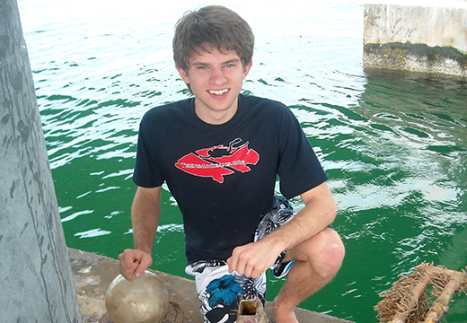
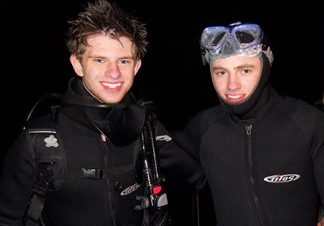
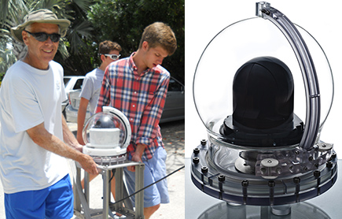

Nate Newman's pursuit of innovation has led him to obtain patents, write a successful grant proposal, and found an engineering company to develop marine ecosystem monitoring technology—all before graduating from high school.

Nate Newman
Kent Denver School, Colorado
For me, the entrepreneurial spirit and the innovative process are more than just invigorating. These are the means by which we may transform dreams into reality. Success and failure, perseverance and retrial, innovation and modification...how else can problems known and those as yet unknown be solved? I believe innovation and the entrepreneurial spirit which unlocks it hold the greatest promise for a world in need of solutions and hope.
I was inspired to become an entrepreneur by a program at my middle school called the Gates Invention Competition, underwritten in 1998 by an endowment from Charles Gates (Stanford '42) and the Gates Family Foundation. In the Gates Invention Competition, students are given the means to create a product, refine it through the course of a year, and present the invention before a panel of engineers in the spring. Judges award “patent-nods” for promising inventions, and, through this program, I had the unique opportunity to file for several patents between grades six and eight.
When I transitioned to high school, I wanted to translate my interests in innovation beyond the middle school program. I met an inspirational science teacher named Trevor Mendelow. Trevor directed a school club called Teens4Oceans, which aimed to connect students from landlocked states like Colorado with the ocean, and I enthusiastically joined. I have long been interested in environmental stewardship and education and decided to approach the Gates Frontiers Foundation to request funding for several underwater instrumentation installations in the Caribbean.

Nate (left) diving with a Teens4Oceans friend during a survey of the Channel Islands in December 2011.
The Foundation awarded Teens4Oceans a grant to file for 501(c)(3) status and to pursue three underwater data acquisition installation projects in the United States and in the Caribbean. To date, we have installed camera systems offshore on Grand Cayman, Lameshur Bay in the U.S. Virgin Islands, Cooper Islands in the British Virgin Islands, three locations in the Florida Keys, and Anacapa Island in the California Channel Islands National Park. In the near future, we are scheduled to install a system on a fringe reef in Akumal, Mexico.
We realized that the technologies Teens4Oceans required to fulfill its mission did not exist. Teens4Oceans sought a means of continuously monitoring marine ecosystems over the internet with minimal maintenance requirements. Trevor and I teamed up with a talented engineering group in Boulder, Colorado to start a company called Wild Goose Imaging. Wild Goose Imaging's proprietary technology includes the first self-cleaning submersible web camera. Our technology allows users to continuously stream HD video to any web-enabled device, from any marine environment. We perceived several commercial markets for our technologies, especially as a means of complementing the generic underwater inspection programs employed by underwater operators and extraction companies.

Left: Nate and an associate carry their self-cleaning underwater web camera and mounting system in the Cayman Islands in June. Right: A recent generation of Wild Goose Imaging's self-cleaning underwater web camera system.
Using Wild Goose Imaging systems, companies can continuously monitor critical infrastructure in high quality, and eschew the traditional “fix-as-fail” method of addressing submarine problems. Wild Goose Imaging's proprietary CleanSweep™ arm eliminates nutrient accumulation on the camera housing; without this feature, it is difficult to maintain a high-quality feed without regular maintenance. We now deploy these camera systems with an array of scientific monitoring devices which serve as real-time and long-term data gathering "science nodes."
Over the next few years, I see myself attending college, developing Wild Goose Imaging, and pursuing other innovative pathways. I am fascinated by new ideas and new products, the intellectual curiosity that brings solutions to light, and the collaboration that brings a solution to fruition.
Biography:
Nate Newman is the son of two teachers. In sixth grade he founded the Carbon Club to raise awareness about climate change and reduce his school's carbon footprint. The following year he successfully persuaded the Parent Association to purchase renewable energy credits to offset Graland's energy usage. While in school, Nate participated in the Gates Invention Competition winning first prize and a patent nod in 2007, third place in 2008, and first prize in 2009. He has received patents on three permutations of his first Gates invention and currently is pursuing two patents pending.
Nate currently attends Kent Denver School, an independent high school in Englewood, Colorado where he is a senior. During freshman year, Nate developed an interest in a marine biology club at Kent called Teens4Oceans (T4O). He later wrote a successful grant proposal for $250,000 to the Gates Frontiers Foundation to facilitate the transition of T4O from a school club to a non-profit organization and to complete projects in the coastal US and Caribbean. Nate is a founding member and partner in a Boulder-based startup, Wild Goose Imaging, a company that creates self-cleaning underwater camera housings and submersible data acquisition equipment.
At Kent, Nate is an active member in Model U.N. and has pursued an interest in diving which has bolstered his interest in marine ecology and permitted him to assist in the installation of Wild Goose Imaging submarine camera systems. He was recently honored to share his entrepreneurial passion as commencement speaker at the University College of the Cayman Islands. Nate is currently completing his senior high school year and seeking undergraduate opportunities to connect him with inspiring mentors and peers passionate about collaborative creativity, innovation, and the entrepreneurial spirit.
Wild Goose Imaging:
http://www.wildgooseimaging.com/index.html
Teens4Oceans:
http://teens4oceans.org/
Gates Invention Competition program at Graland Country Day School:
http://www.graland.org/gatesinvention?rc=0
Kent Denver Connection including Nate's UCCI commencement address:
http://www.kentdenver.org/commoninc/pushpage/311/connection_new/default.asp?volume_id=37931
http://www.compasscayman.com/caycompass/2012/10/31/Teen-inventor-is-keynote-speaker/
Watch Nate on Cayman 27 News in June:
http://www.cayman27.com.ky/2012/06/25/teens-4-oceans-project